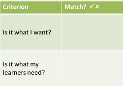

Evaluating course materials
|
ELT coursebook publishing is a
multi-million pound industry, yet the whole business of
product assessment is haphazard and under-researched. |
And not much has changed in the intervening decades.
There are two ways to evaluate the effectiveness of course materials (Ellis 1997):
- Retrospectively, looking at the material to see how well it served its purposes and how the learners and teachers felt about it
- Prospectively, to assess how well the material will perform in meeting course objectives
Retrospective evaluation |
This is the simplest to carry out because we can set up the
criteria quite easily. Exactly what they are will depend on
the objectives and the materials. Here are some ideas and some
issues.
Click on the
 when you have identified the problem with each way of evaluating the
materials.
when you have identified the problem with each way of evaluating the
materials.
| Ask the
learners. Have a meeting, select a focus group or give them a questionnaire intended to find out if they liked the materials, found them engaging, enjoyed the topics, thought they learned from them etc. |
There are a number of problems:
(For a guide to constructing questionnaires, look at the needs analysis guide on this site.) |
| Ask the
teachers. Have a meeting or give them a questionnaire intended to find out if they found the materials usable, engaging, helpful, effective etc. |
There are a number of problems:
|
| Test the
outcomes. Give the students an entry test in the key skills and language they are going to learn on the course and then re-test them at the end to see if there is measurable improvement. |
The obvious problem with this is that you can't be
sure what caused the improvement (if there is any).
Was it good teaching? Was it good studying? Was it effective materials? Was it high levels of motivation? Was it a combination of all of these factors? etc. If no measurable progress was made, what component of the course prevented it? |
The greatest problem with retrospective evaluation is, of course, that it is too late. By the time you get to evaluate the material, the course is over and the effectiveness or ineffectiveness of the materials has already been shown.
Prospective evaluation |
This is what most people understand by material evaluation.
It is the effort to decide whether whatever material you are
presented with is fit for its purpose.
In simple terms: Will it work?
There are again a number of immediate problems.
Click on the
 when you have identified the problem with each way of evaluating the
materials.
when you have identified the problem with each way of evaluating the
materials.
| Read a review. Reviews of new, and not so new, materials appear in the professional press quite frequently. Decide on the basis of good reviews; discard on a similar basis. |
There are two obvious problems:
|
| Rely on the
publishers' descriptions. Read the blurb on the back cover and the descriptions provided by the publishers to decide what kind of coursebook will suit your purposes. |
There are a number of problems:
|
The upshot is that teachers have to rely on their own judgements
and look at the material carefully. All too often, however,
this becomes a very impressionistic exercise which results in
something like:
It looks nice and is at the right level, so I'll use it.
|  |
Sheldon's check list for evaluation |
Sheldon (op cit.: 241-2) has a useful checklist to help us be a little
more objective and it covers the following areas which you are
encouraged to rate as Poor, Fair, Good or Excellent.
The questions may vary according to your setting and the objectives of your
teaching / learning programme so it may be unwise to rely on them too
uncritically.
They may also, of course, not all be relevant to you and the
importance of each criterion may vary.
Briefly, they are as follows (with questions adapted, abbreviated and updated):
- Rationale
- Are the objectives and target audience spelt out clearly?
- Availability
- Can you get hold of it?
Can you get more of it?
Are all the components (recorded material, websites, teacher's guide etc.) available now? - User definition
- Is it clear for whom the material is intended?
Does the description match your learners?
Is the level objectively defined? - Layout/graphics
- Is it pretty and appealing or dense and dull?
- Accessibility
- Can you and the learners find your way around?
Is there advice for the learners?
Is self-study directed?
Is it clear what progress is being made? - Linkage
- Is there thematic or topic coherence?
- Selection/grading
- Is the learning curve and level of challenge to steep, too
shallow, too low or too high for your learners?
Is it systematic?
Does it cover the material your learners need? (I.e., Is it compatible with your syllabus and objectives?) - Physical characteristics
- Too big? Too heavy? Reusable?
- Appropriacy
- Will the content appeal to your learners?
- Authenticity
- See the guide to authenticity
to judge how real the language and tasks are.
Does the material exhibit both text and learner authenticity? - Sufficiency
- Will it be enough or will you have to devise / import lots
of other material to back it up?
Does this matter? - Cultural bias
- Is it potentially offensive?
Does it cater for your learners' culture(s)?
Will your learners think it has a valid approach? - Educational validity
- Does it fit in with the broader educational concerns of your
learners in your setting?
Does that matter? - Stimulus/practice/revision
- Is the material stimulating?
Is there enough practice?
Is there sufficient revision and recycling? - Flexibility
- Will it work in your setting?
Does it make too many demands on teachers and resources? - Guidance
- Is the teacher's book any good or does it just tell people the right answers and suggest going on to Activity 5 when you have finished Activity 4?
- Value for money
- You must be the judge of this.
Does it matter to you?
CATALYST |
An alternative (and briefer) way to evaluate course material is
to use a cumbersome, non-intuitive mnemonic (Grant, 1987).
CATALYST stands for:
Communicative?
Aims appropriate?
Teachable?
Add-ons available?
Level right?
Your impression?
Student interest?
Tried and tested
methodology?
Again, not all these categories will have the same relevance or importance in all settings.
 |
Alternatives |
There are as many ways of evaluating material as there are people evaluating material. For a good overview, see Sheldon 1987.
In that publication, Breen and Candlin offer a checklist of no
fewer than 34 separate questions, divided into phases, to answer
when evaluating material.
Here they are. You need to make up your own mind concerning
the doability of this kind of evaluation and its effectiveness for
you. You may also like to consider the assumptions about best
practice which underlie some of the questions.
- When they finish their course, what should your learners know of and about the target language?
- What should they be able to do in and with the language?
- What knowledge about language and what guidance for using language appropriately for different purposes in various situations are offered in the materials?
- What do the materials offer which your learners will need to know?
- What do the materials offer which your learners will need to be able to do?
- What is missing from the materials?
- How do you think you best learn a language? What is most useful for learners to do to help them learn?
- What procedure or sequence of work does the learner have to follow in order to be successful at the task?
- Which types of task seem to be most conducive to learning?
- Which helpful ways of learning seem to be missing from the tasks provided in the materials?
- What can I do as a teacher which can best help my learners to learn a new language?
- What are you expected to do to help your learners work successfully through the materials?
- Do materials give you enough freedom to adopt those roles which for you are most helpful to learners discovering a new language?
- Are you asked to take on roles you do not regard as appropriate?
- Do the materials limit what you want to do as a teacher in using them with your learners?
- What contributions can a classroom and its participants make to learning and teaching languages?
- Which of your contributions to classroom work are referred to and extended in the materials: your contribution as a teacher; your learners' contributions (as individuals or as a group); or the contributions of other classroom resources?
- During classroom work, which of these contributions are additional to those referred to and extended in the materials?
- How and to what extent do the materials fit your learners' long-term goals in learning the language and/or following your course?
- How far do the materials directly call on what your learners already know of and about the language, and extend what they can already do with and in the language?
- How far do the materials meet the immediate language learning needs of your learners as they perceive them?
- Which subject-matter (topics, themes, ideas) in the materials is likely to be interesting and relevant to your learners?
- In what ways do the materials involve your learners' values, attitudes and feelings?
- Which skills do the materials highlight and what kinds of opportunity are provided to develop them?
- How much time and space, proportionately, is devoted to each skill?
- How is your learner expected to make use of his/her skills?
- How are the learners required to communicate when working with the materials?
- How much time and space, proportionately, is devoted to your learners interpreting meaning?
- How much time and space, proportionately, is devoted to your learners expressing meaning?
- How and how far can your materials meet the desire of individual learners to focus at certain moments on the development of a particular skill or ability use?
- On what basis is the content of the materials sequenced?
- On what basis are the different parts of the materials divided into 'units' or 'lessons', and into different sub-parts of units/ lessons?
- On what basis do the materials offer continuity? How are relationships made between 'earlier' and 'later' parts?
- To what extent and in what ways can your learners impose their own sequencing, dividing up and continuity on the materials as they work with them?
In the same publication, Dougill offers another huge, and
arguably unmanageable, set of questions.
You may also like to consider the assumptions about best practice
which underlie some of these questions, too.
Here they are:
- Progression
Is the course linear or cyclical?
How steep or shallow is it (compared to other courses)? - Revision and recycling
To what extent is this built-in or provided for? - Skills
Is there an integrated skills approach?
To what extent are all four skills catered for? - Cohesion
Does the course hang together as a whole or is there an imbalance?
Is there undue weighting on certain aspects? - The units
Is the amount of material commensurate with the intended amount of contact time?
Does the unit seem forbidding or inadequate? - Presentation
Is the language presented in a clear manner and in an interesting way?
Is there an inductive or deductive approach? - Practice
Is it sufficient?
Does it allow for free production?
Is it meaningful or personalized? (In other words, does it involve the students in any way other than just as a mechanical exercise?)
Does it ensure that students will be able to generate language on their own outside the classroom? - Variety and regularity
Does each unit follow the same format? If so, is there sufficient variety to maintain student interest?
If not, is there sufficient regularity for teacher and students to establish a working pattern? - Clarity of purpose
How clear is it what students are expected to do?
How easy is it for students to carry out what they are supposed to do? - Interest
How likely is the subject matter to hold the students' interest?
Is there a fact or fiction bias?
Is it intrinsically interesting, or does it merely serve as a vehicle for the language work? - Culture- or age-bound
Is the material culture specific?
Is it too childish or too sophisticated for the target-group?
Is it sexist or racist? - Visual appeal
Are the pages too dense or unappealing?
Do the layout and typeface aid or hinder the purpose of the material? - Motivating
Is the book likely to have a motivating effect or to put students off? - Illustrations
Do they serve a function or are they decorative?
Are they clear enough for their intended purpose?
Are there too many or too few?
Are they childish, sexist or culturally offensive? - Other features
Are there any extra tables, lists or explanations for the student?
How useful are they?
How useful is the book for the student outside the class? Is there a key? - The cassette
How clear is it?
How natural? To what extent is it authentic?
Does it necessitate a tapescript? If so, is it available?
Is it sufficiently demanding?
Are the passages too long to hold the students' attention? - The teacher's book
Is it aimed at experienced or inexperienced teachers?
Is it foolproof (i.e. sufficiently methodical to guide the inexperienced teacher through a lesson)?
Does it provide (imaginative) alternatives?
Is it 'easy to follow visually? Is it interleaved? If not, is it manageable when used in conjunction with the students' book?
Does it leave the teacher with a lot of preparing to do? - Tests, laboratory drills and workbooks
Do they accomplish what they set out to do?
How far are they communicative?
Do they provide a worthwhile investment, or would teachers be better advised to do without or make up their own?
Now, having answered the 50 or so questions in that list, you can
choose your material. Bear in mind, of course, that you will
have to answer all the questions for each piece of material you have
in mind as a possibility to use.
That means, if you have three to choose from, you are going to have
to take the time carefully to answer 150 questions, record the
results and weight them in a way that makes them comparable.
 |
The problem with solutions |
The main issue (apart from the sheer length of the processes
proposed) is that the questions are not prioritised for you
and your setting so asking the questions in order may not
be very productive.
For example, if your main priority is that the material should be
culturally sensitive, relevant and interesting (Breen and Candlin's
questions 22 and 23 and Dougill's question 11), then a negative
response to those questions is all you need to reject the material.
Your time spent answering all the other questions has been wasted.
It is little surprise that busy teachers, when faced with this kind
of overkill, fall back on
It looks nice, it's at the right level
and all the bits are available so that's what I'll use.
Keep it simple |
There is much to be said for keeping things simple. Through
simplicity, often comes wisdom. And it is wise choices that we
are trying to make.
Here's the patented ELT
Concourse materials evaluation machine. It is a way
of looking at materials which will also allow you to have the time
to use them.
This can be slightly elaborated if you have time hanging heavily on your hands. Clicking on this link will allow you to download a simple form that you may find useful. The form can naturally be adapted to include what you see as critical issues by simply weighting the scores in the appropriate sections or for each question (i.e., doubling them, adding 20% to them etc.).
References:
Ellis, R, 1997, The empirical evaluation of language teaching
materials, English Language Teaching Journal, 51/1, Oxford:
Oxford University Press
Grant, N, 1987, Making the most of your textbook, Harlow:
Longman
Sheldon, L, 1988, Evaluating ELT textbooks and materials, English Language Teaching Journal,
42/4, Oxford: Oxford University Press
Sheldon, L, 1987 (ed), ELT Textbooks and Materials: Problems in
Evaluation and Development, Milestones in ELT, ELT-33, Modern
English Publications in association with the British Council